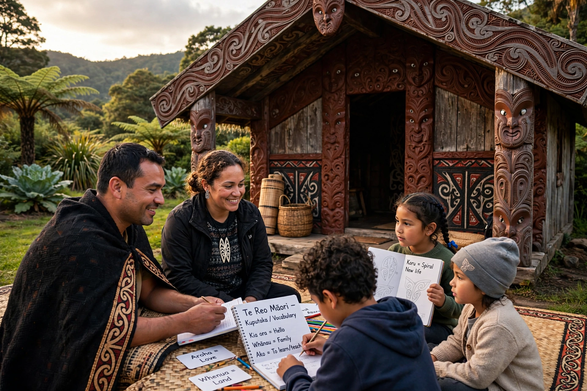

Māori (Māori: te reo Māori, literally 'the Māori language'), commonly shortened to te reo, is an Eastern Polynesian language and the language of the Māori people, the indigenous population of mainland New Zealand. It is closely related to Cook Islands Māori, Tuamotuan and Tahitian, and has been an official language of New Zealand since 1987.

| Native to | New Zealand |
|---|---|
| Speakers | c. 213,000 claim some ability (2023 census); ~4% of population speaks it as one of their languages |
| Family | Austronesian > Malayo-Polynesian > Oceanic > Polynesian > Tahitic |
| Writing system | Latin (Māori alphabet) |
| Official status | New Zealand |
Māori arrived in New Zealand from eastern Polynesia in the 13th–14th centuries. In the 19th century Māori was widely written and spoken, but urbanisation and English-medium schooling after the Second World War drove steep decline; by the 1970s many feared it would die out. Revitalisation began with Te Ataarangi and kōhanga reo ('language nests', from 1982), followed by kura kaupapa Māori immersion schools and Māori Television. The Māori Language Act 1987 made it an official language and established Te Taura Whiri i te Reo Māori (the Māori Language Commission). Te Wiki o te Reo Māori (Māori Language Week) is held annually.
Māori has ten consonants (p, t, k, m, n, ng, wh, r, h, w) and five vowels, each short or long (marked with macrons). It is a verb–subject–object language with particles marking tense/aspect (ka, kei te, i, kua), inclusive/exclusive and dual/plural pronouns, and possessive a/o categories.